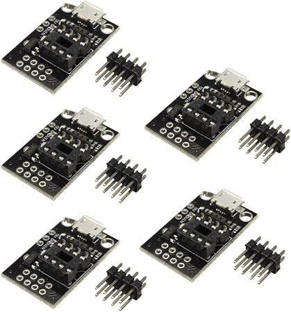
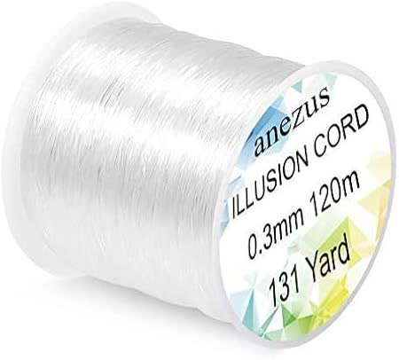

🛒 Product 🕷️ Halloween Spider Drop — pająk spadający na ruch
Data: 2026-10-18 · Projekt: youtube.com/watch?v=GFcJuV7v6f4 (3:43, analiza klatek kadr po kadrze) · Inwentarz: docs/hardware-inventory.md · Ceny: amazon.se live
TL;DR: Prawie wszystko masz — PIR AM312, silnik DC, MOSFET-y, 18650 z holderem, drukarkę z PETG. W wariancie „0 kr" (sterowanie na ESP32 zamiast Digisparka z filmu) nie kupujesz nic — nici wystarczy zwykła nylonowa z domu. Wariant „1:1 jak w filmie": Digispark ATtiny85 ×5 — 76 kr + ewentualnie żyłka 0,3 mm (72 kr).
film nie podaje linku do modeli; Thingiverse CDN 403 dla miniatur (znana lekcja) — do obróbki w osobnym kroku, jak chcesz
🎬 Jak działa projekt (z klatek wideo)
Silnik DC kręci drukowaną szpulą (fioletowa, na gumce recepturce) — pająk na nylonowej nitce spada/szybuje w dół framugi drzwi, gdy PIR wykryje ruch. Elektronika: ATtiny85 (Digispark), tranzystor/MOSFET na silnik, PIR z kopułką, włącznik ON/OFF, zasilanie bateryjne. W pająku czerwona LED jako „oko".
silnik DC ✅ (+ L9110 driver i MOSFET-y AO3400 jako sterowanie)
Zasilanie bateryjne
18650 + holdery + płytki ładowania
Obudowa + szpula + pająk (druk 3D)
Kobra S1 + PETG (czarny na pająka, dowolny kolor na szpulę); TPU na gumowe mocowanie
Tranzystor, rezystory, przewody
w komplecie
🛒 Do kupienia — amazon.se

opcja 1:1: Digispark ATtiny85 ×5 — 76 kr (DollaTek, ATtiny13A/25/85 kompatybilne)
Tylko jeśli chcesz zbudować „permanentnie" w małej obudowie zamiast oddać ESP32 z półki. Z ESP32 masz WiFi (bonus: trigger z telefonu) i zero czekania na dostawę. → amazon.se/dp/B081JN7J7N · inne: 85,99 kr B07MB8Y8SF, 189 kr B07ML2SJZN

Żyłka 0,3 mm (Anezus) — 72 kr(opcja)
Do pająka wystarczy każda cienka żyłka/nitka z domu (0 kr). Jeśli chcesz „niewidzialną" linię na stałe — ta jest OK, 0,3 mm, klarowna. → amazon.se/dp/B07J62FVCV
Wariant
Koszt
Komentarz
🏁 0 kr — na ESP32 z szuflady
0 kr
zwykła nitka/żyłka z domu, ESP32 + AM312 + MOSFET + silnik DC + 18650; drukujesz obudowę/szpulę/pająka
1:1 jak w filmie
76 kr
Digispark ATtiny85; żyłka z domu
Komplet „na lata"
148 kr
Digispark ×5 + żyłka Anezus
💡 Rekomendacja
Bierz wariant 0 kr na ESP32. Digispark z filmu to tylko mniejsza płytka — u Ciebie pająk i tak wisi nad drzwiami, obudowa drukowana, więc wielkość ESP32 nie boli.
Do sterowania silnikiem DC: MOSFET AO3400 (masz) albo driver L9110 (masz) — filmu nie musisz kopiować układowo.
gumka recepturka na szpulę = szuflada (Biltema ma za 10 kr, jakby co).
Modele 3D (pająk/szpula/obudowa): Printables „spider drop" — jak chcesz, zrobię drugi research z linkami do STL.